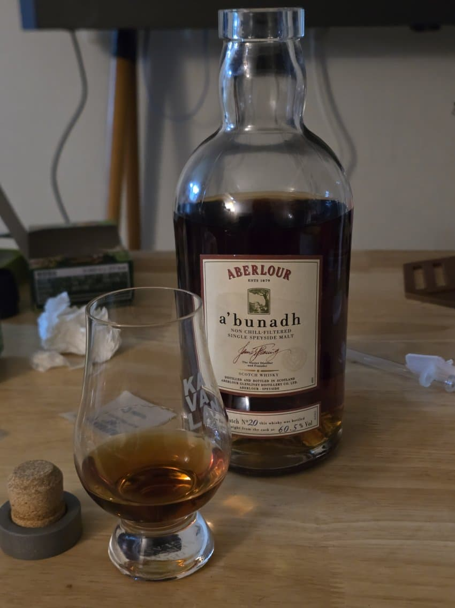

1. 기본 정보
- 이름: 아벨라워 아부나흐 배치20
- 증류소: 아벨라워
- 알코올 도수: 60.5%
- 숙성 연수: NAS
2. NPF
- Nose 91
도수는 어쩔 수 없는지 아세톤 혹은 알코올이 코를 찌르른 편이다. 좀 익숙해지면 적사과가 선명히 드러나고 잘 익은 생 포도 향이 난다. 미티함이 조금 있다. 전반적으로 진한 셰리라는 느낌을 주는데 그렇게 무겁지만은 않아서 좋다. (물을 한방울 첨가하면) 아세톤이 쑥 올라오고 그걸 날리면, 싱그러운 뉘앙스, 허브가 좀 더 강해졌다. 열매가 익지 않은 여름의 과수원을 지나는 듯한 느낌이다. 뒤에서 스쳐지나 가는 한약재의 향, 후추와 정향의 스파이시도 올라온다.
- Palate 90
카라멜리한 단맛과 적사과도 있다. 포도와 건포도 사이의 어딘가 라고 여겨지는 포도의 단맛도 느껴진다. 묵직하고 실키한 질감이 매력적이고 밀크초콜릿이 연상된다. 오크의 우디함도 혀 뒤 쪽을 자극한다. (물을 한방울 떨어뜨리고) 오키함이 좀 억제된듯하고 실키한 단맛, 산미의 힌트, 감칠맛이 올라온다.
- Finish 89
미세한 스퍼미딘 혹은 비릿함이 살짝 지나가고 우디함이 느껴진다. 적절한 쓴 맛과 초콜레티함이 좋다.
3. 최종 점수
- 총점: 90.5
4. 총평
- 굉장히 찐하면서도 통에 완전히 잡아먹혔다는 인상이 들지 않는 위스키. 색깔과 도수에 비해 마시기 부담스럽지 않고 밸런스가 좋다.
댓글 17개